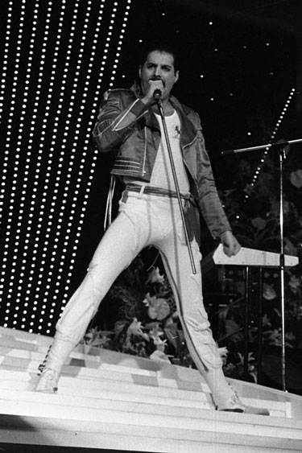

Meet Queen!
Queen are a British rock band that formed in London in 1970. Their classic line-up was Freddie Mercury (lead vocals and piano), Brian May (lead guitar and vocals), Roger Taylor (drums and vocals), and John Deacon (bass guitar). Their earliest works were influenced by progressive rock, hard rock and heavy metal, but the band gradually ventured into more conventional and radio-friendly works by incorporating further styles, such as arena rock and pop rock, into their music. Find more information at Wikipedia.
Members

Freddie Mercury
More on Freddie Mercury
Brian May
More on Brian May
Roger Taylor
More on Roger Taylor
John Deacon
More on John DeaconDiscography
- Queen, 1973
- Queen II, 1974
- Sheer Heart Attack, 1974
- A Night at the Opera, 1975
- A Day at the Races, 1976
- News of the World, 1977
- Jazz, 1978
- The Game, 1980
- Flash Gordon (Original Soundtrack), 1980
- Hot Space, 1982
- The Works, 1984
- A Kind of Magic, 1986
- The Miracle, 1989
- Innuendo, 1991
- Made in Heaven, 1995